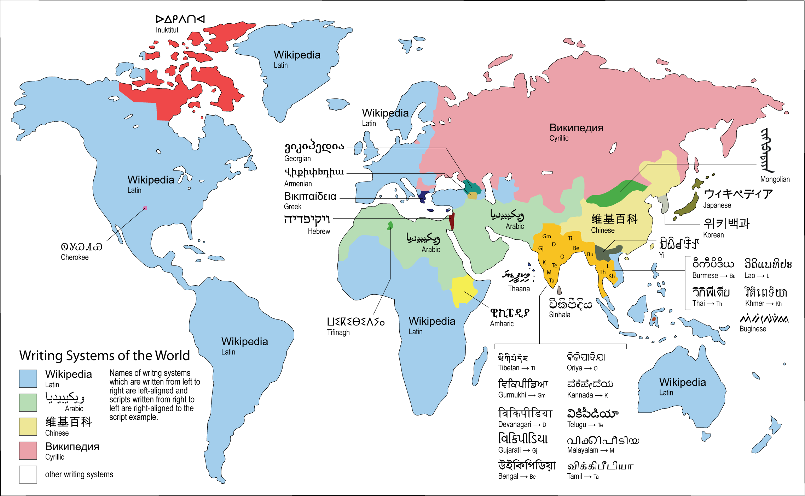
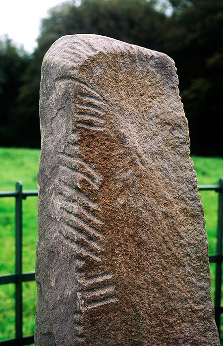
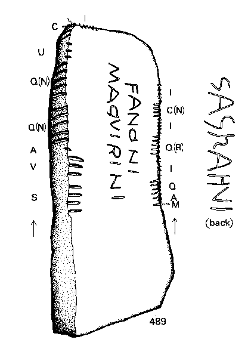
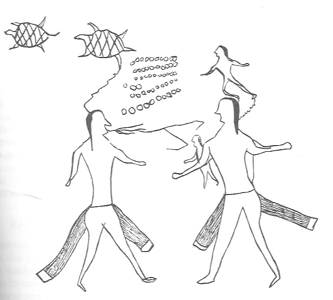
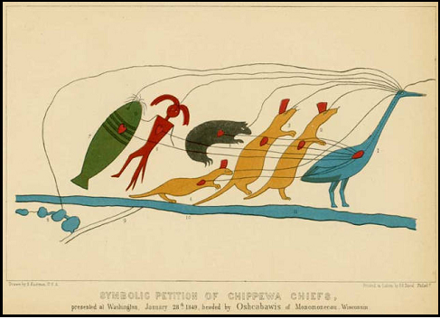
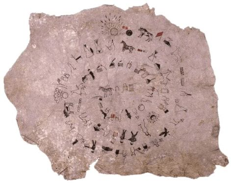
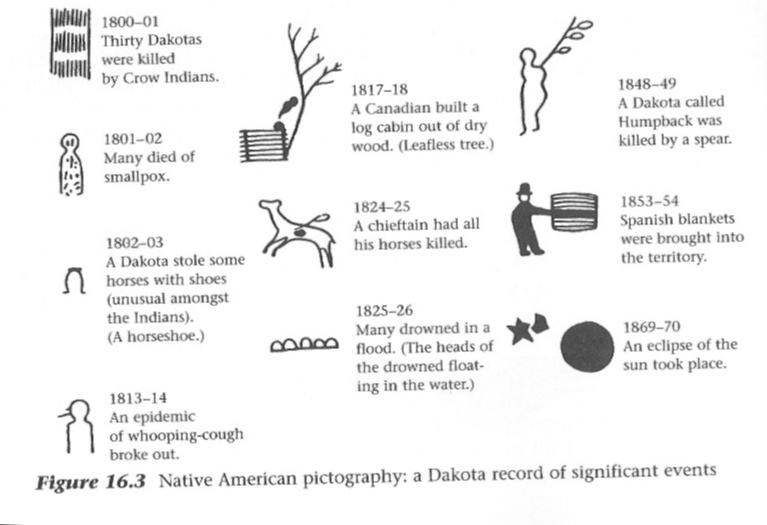
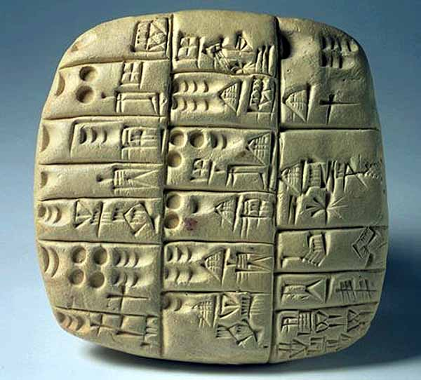
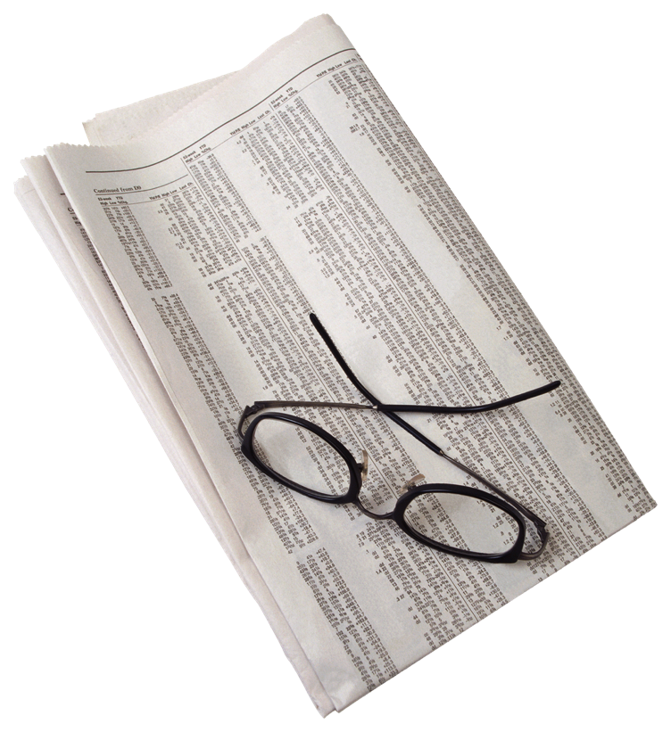
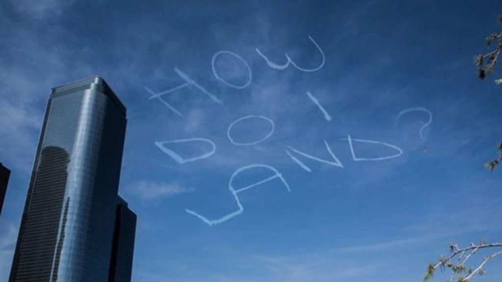

Decipherment
Day 4: What is Writing?
Last Time
Review
- Finished up ciphers (aristocrats)
- The Behistun Inscription
- How did decoding the Zodiac Killer’s first message (Z408) help with the Behistun Inscription?
What is Going on Here?

The Old Persian Script
To Be Able to Decipher:
We need to dig into what exactly a writing system is and is not and what it can and can’t be.
To Be Able to Decipher:
And to do that we need to first figure out: what is writing?
What is Writing?
The World’s Writing Systems
What is Writing?
With your partner, discuss the following questions:
What does writing allow humans to do that speech alone cannot?
What does speech allow humans to do that writing alone cannot?
With these differences in mind, how would you define writing?
What is Writing?
Narrowly:
- records instances of language for the future;
- allows humans to transmit information to others not within hearing distance, both spatially and temporally
What is writing?
More broadly:
- The representation of language with the use of visual or tactile signs
But what is language?
What is language?
- “Language is a complex system residing in our brains which allows us to produce and interpret utterances.” (Rogers 2005:2)
What is writing?
- The primary goal of writing is to make our utterances, which are by default audible (for spoken languages), visible
The Relationship Between Form and Meaning
Writing systems are made of visible forms that stand for linguistic meanings.
To understand how writing works — and how it can be deciphered — we need to ask a more basic question first:
How can a form come to mean anything at all?
Signifier and Signified (de Saussure)
Following the very famous linguist Ferdinand de Saussure, a sign consists of two parts:
Signifier: the physical form (sound, mark, shape)
Signified: the concept or meaning associated with it
Crucially, the relationship between them is not natural, but conventional.
Signifier and Signified (de Saussure)

Icons
An icon resembles what it represents.
- A drawing of a house → ‘house’
- A stick figure → ‘person’
The connection between form and meaning is based on visual similarity.
Indices
An index points to its meaning through a direct connection.
- Smoke → ‘fire’
- Footprints → a ‘person’ passed by
The sign does not resemble its meaning, but is physically or causally linked to it.
Symbols
A symbol has an arbitrary, learned relationship to meaning.
- Words in spoken language
- Most letters and characters in writing systems
Symbols must be learned — they cannot be guessed from form alone.
Iconic signs
- Signs within a writing system may be iconic
- the signifier bears strong resemblance to the signified
- Signifier = letter, syllabogram, character, etc.
- Signified = what the sign represents (word, sound, etc.)

Egyptian < pr >, from ‘house’
Symbolic Signs
- Or symbolic
- arbitrary relationship between the signifier and signified
Ogham alphabet
Ogham


But every writing system must represent language
pr ‘house’ & the syllable /pr/
the sounds of Old Irish
Iconic or Symbolic?

Iconic or Symbolic?
𓀀 — man (seated man) - logogram for “man”; also used as a determinative for male humans
𓁐 — woman - logogram for “woman”; determinative for female humans
𓀒 — death / corpse / mummy - semantic indicator for death, dying, burial
𓂻 — walking legs; determinative for motion, travel, action
𓇳 — sun / Ra - logogram for “sun” or the god Ra
Iconic or Symbolic?
𓅓 — m
𓇋 — i / y
𓈖 — n
𓆑 — f
The Cheyenne Indian Letter
The Cheyenne Indian Letter
- 19th c. message from Turtle-Following-His-Wife to his son, Little Man
- Conveys the following message: “Dad (TFHW) says to return home, enclosed is $53 for the cost of the trip”
Is this writing?
writing: the representation of language with the use of visual or tactile signs
Pictographs =/= Writing
- The Cheyenne letter is an instance of pictographs, or picture writing
- Signs represent an event or an idea and not direct language
- Direct language = words, morphemes, phonemes, etc.
- Pictograph = pictorial representation of objects, ideas and events, independent of a word or utterance that refers to that object, idea or event
Chippewa Petition
birchbark petition to Congress from seven Chippewa chiefs, 1849
Chippewa Petition
- Sent to the United States Congress by a group of Indian tribes
- Asked for fishing rights in certain small lakes
- The tribes are represented by their totems:
- Crane (leader), martens, bear, merman and catfish.
Chippewa Petition
- Lines running from the heart and eye of each animal to the heart and eye of the crane denote that they are all of one mind
- Line runs from the eye of the crane to the lakes, shown in the lower left-hand corner.
Winter counts
Lone Dog’s Winter Record: 1800-71
Winter counts
One pictograph per year, signifying the most important event
Traditionally written on buffalo hides
- Pictorial calendars and histories in certain Native American tribes
- Lone Dog – Dakota
- Pictorial calendars and histories in certain Native American tribes
Winter Counts
Modern pictographs
- You already encounter pictographs every day — often without noticing them.

Modern pictographs
Your task is to identify three modern pictographs. Are they icons, indices, or symbols?
Language & Writing
- Earlier we established that a writing system must represent language
- But is writing a perfect representation of language?
Language & Writing
There are certainly writing systems that show an excellent one-to-one correspondence between the signifier (the writing sign) and the signified (morpheme or phoneme)
Chinese

Finnish

English?
- There are definitely one-to-one correspondences in English:
- b = /b/; boy, maybe, rob
- n = /n/; new, whiner, in
- w = /w/; war, Ewok, now
English?
- But the English orthography is far from a true alphabet, where one letter = one sound…
- b: debt!
- n: damn!
- w: wrestle!
two letters = one sound
- Shoot – sh = one sound [ʃ]; not s + h
- Character – ch = one sound [k] as in kick
- Church – ch = one sound [ʧ]; not c + h
- Thomas – th = one sound [t] as in Tom
- Either – th = one sound [θ]; not t + h
- Ether – th = one sound [ð]; not t + h
- Physics – ph = one sound [f] as fix
- Rough – gh = one sound [f], as in roof
letters = no sound…
- autumn
- pneumonia
- psychodelic
- clothes
- knight
Same spelling = Different sounds…
- If one letter = one sound, what about -ough?
- Cough, tough, bough, through, though, thoroughfare

Different spellings = Same sound
See, senile, sea, seize, scenic, siege, ceiling, cedar, juicy, glossy, sexy
All of these spellings convey the sound combination [si]
What letters represent [si] in these words?
Different spellings = Same sound
This is why linguists often use the IPA (International Phonetics Alphabet) when describing speech sounds.
/kæn ju rid ðɪs sɛntəns ɪn ði aɪ pi eɪ/
Other Properties of Writing
Language vs. Writing
- Obviously in writing systems such as ours, writing is not a perfect representation of language
Language vs. Writing
- Aside from these language-specific examples of imperfect correspondence between language and writing, there are other, deeper differences between the two
Writing vs. Language: Discreteness
- In speech, especially within words & tightly bound syntactic phrases, there are no breaks
- Speech is continuous; writing is discrete.
Speech vs. Writing: Time
Speech is bound to utterance time; writing is not.
Speech vs. Writing: Permanence
Speech is evanescent; writing is permanent.
Speech vs. Writing: Medium
Speech is audible; writing is visible.

Speech vs. Writing: Production
Speech is produced by voice; writing is produced by hand.
Canonical speech vs. Canonical Writing
There’s some grey area, however…
Let’s consider three other types of language/writing:
American Sign Language

Skywriting
Braille

There’s some grey area, however…
Let’s consider three other types of language/writing:
- American Sign Language (ASL)
- Skywriting
- Braille
Do these follow the criteria we put forth for language and writing?
Which is language? Which is writing?
The big picture?
- Rogers (2005:2) :
- “Language is a complex system residing in our brains which allows us to produce and interpret utterances.”
- “Writing involves making an utterance visible.”